Claude Code, in production: skills, sandboxes, subagents
A working guide for people who are comfortable with ChatGPT and want to make Claude Code feel the same way, and then go three or four steps further.
This is a long post. I advice you to read it top to bottom the first time if you're new to Claude Code, then bookmark it, and come back to Skills: discovering, installing, using and the sections after it when you actually need them.
If you're already comfortable with Claude Code, you can skip the first section and go straight to CLAUDE.md. Or simply open the table of contents and click on the section you want to read.
Targets Claude Code v2.1.145, May 2026. Versions move fast, so I'll flag features that shipped recently so you can sanity-check against the release notes if something looks off.
One more thing: check how your Claude account is billed. Pro/Max users mostly think in usage windows and weekly caps, while many Enterprise accounts are usage-based with custom spend caps and API-rate pricing. I cover this in detail in section 12, but it matters before you spend hours on the more expensive models like Opus.
1. From ChatGPT to Claude Code
If you've used ChatGPT, you already understand 80% of how Claude Code works. The other 20% is what makes it dangerous, but in the good way.
Claude Code is not a chat. It's a CLI agent that lives next to your code. You give it a prompt, and instead of just talking back, it can:
- read files in your project,
- run shell commands,
- and edit code on disk
... all with your permission. Think of it as a senior pair-programmer with hands.
Where you can run it
You have four main options. I'll list them in order of how much I use them:
- Terminal (recommended). Just
claudein any directory. This is the canonical experience, all features land here first, and the keyboard-only workflow stops feeling weird after about a day. Everything in this post assumes you're here. - VS Code / Cursor / JetBrains plugin (second-best). Same engine, but the diff previews are nicer and you stay in your editor. If you prefer to live in your IDE, install this. However, please keep in mind that this is not as mature as the terminal experience.
- Desktop app (Mac / Windows). Polished UI, good for non-coding tasks and conversations where you want a real text editor. Some advanced flags and slash commands take longer to ship here. I've heard that the desktop app has a few bugs and is not as stable as the terminal experience, but I haven't used this myself.
- Web at claude.ai/code. Best for one-off questions when you're away from your machine, triggering "ultraplan" mode, or for kicking off scheduled routines that run on Anthropic's infra. This is usually not where you want to do your daily work.
Installation
Install instructions move around enough that I won't reproduce them here. Please refer to the official quickstart.
If you're using Windows, I highly recommend you to use the Windows Subsystem for Linux (WSL) and install Claude Code in the WSL terminal so that every time you open Claude Code, you always open the latest version. But normal terminal experience inside Windows PowerShell or Command Prompt is also fine, although this may mean you need to manually update Claude Code from time to time since WinGet installs do not auto-update. But at the end of the day, it's up to you.
If you're using macOS, please use curl to install Claude Code (this is the native way that Anthropic recommends as well). Based on personal experience, I do not recommend using Homebrew.
Please come back when claude --version works.
Two first examples
In your terminal, cd into a project you know well. Any project. Then, run the following command:
claude
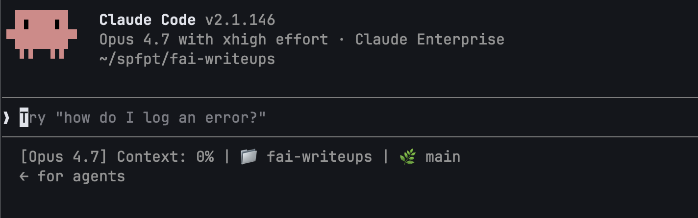
This is the welcome banner.
A prompt appears. Try:
what does this repo do?
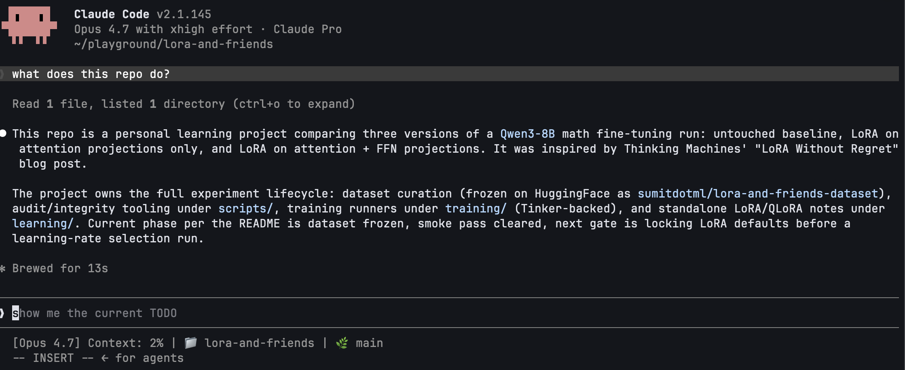
Claude reads enough of your repo (README, top-level files, maybe package.json or pyproject.toml) to answer. You did nothing other than cd to the project directory and run claude and ask 1 simple question. That's the difference from ChatGPT.
If you do not yet have a README.md file in your project, please paste the following command to create it (if you already have a README.md file, please skip this step):
echo "# README.md\n\nLearning LoRA and finetuning by doing my own experiment where I compare three versions of the same \`Qwen3-8B\` math run:\n\n1. the untouched baseline\n2. LoRA on the attention projections\n3. LoRA on both attention and feed-forward projections.\n\nThis project came to mind when I was reading the \"LoRA Without Regret\" blog post by Thinking Machines; so many research ideas to explore! Well, I only knew LoRA conceptually before this, and I have never done any serious finetuning before except for a hackathon, so I think this challenge I have set for myself is pretty nice.\n" > README.md
Now try:
@README.md what's missing from this README that a new contributor would want?
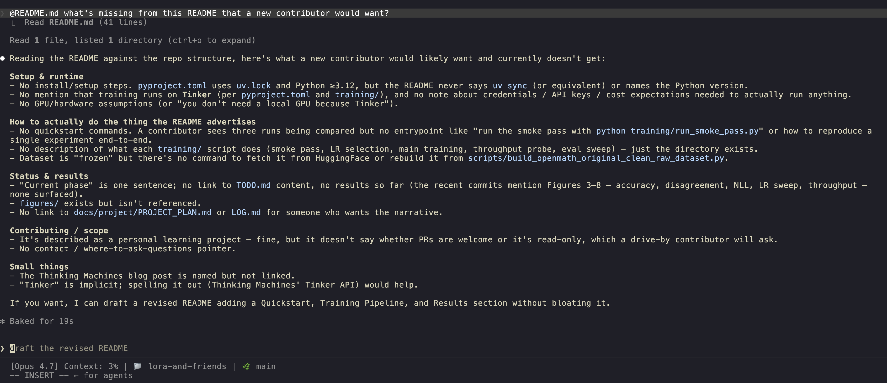
The @ triggers a fuzzy file picker. Whatever you pick gets read into context. That's your first non-trivial superpower: Claude Code sees what you point at.
The mental model
Claude Code is ChatGPT that can see your filesystem and run things with permission.
That sentence does about 90% of the work. Keep it in mind every time you're tempted to copy-paste code into a chat. You don't need to. Just point Claude at the file.
2. CLAUDE.md is the most important file in your repo
If you remember one thing from this post: drop a CLAUDE.md in your repo. It might as well be the single highest-leverage change you can make.
CLAUDE.md is a markdown file that Claude Code auto-loads at the start of every session in that directory. It's how you tell Claude things it can't infer from the code --- conventions, commands, gotchas, "we use uv not pip" --- so you don't have to repeat yourself.
Where it lives
Claude Code looks for CLAUDE.md in three places, in this order:
| Path | Scope |
|---|---|
~/.claude/CLAUDE.md |
User-level. Your personal preferences, applied to every project. |
<repo>/CLAUDE.md |
Project-level. Goes in git, shared with the team. |
<repo>/<subdir>/CLAUDE.md |
Subdirectory-level. Loaded only when you're working in that subtree. |
Plus CLAUDE.local.md, which is the same as <repo>/CLAUDE.md but conventionally .gitignored. Use it for personal notes that shouldn't be committed.
Personally, I prefer to keep my CLAUDE.md in the root of the project directory and do not prefer to put it at a user level. For instance:
project-name/
├── src/
│ ├── cute/
│ │ ├── blackwell_helpers.py
│ │ ├── flash_fwd.py
│ │ └── paged_kv.py
│ ├── layers/
│ ├── models/
├── examples/
│ ├── inference/
├── docs/
│ ├── architecture.md
│ └── testing-guidelines.md
├── CLAUDE.md # <-- here
├── .gitignore
├── .env
├── Makefile
├── README.md
└── LICENSE
/init
The fastest way to get started: in a fresh claude session in your repo, type:
/init
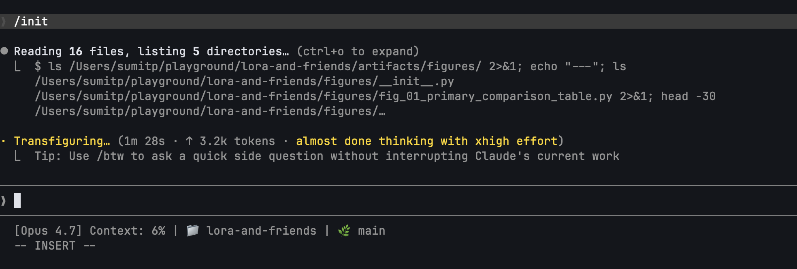
Claude inspects the repo and proposes a CLAUDE.md. Review it, trim it, accept. Don't accept what it proposes as it is, because it could end up including too much.
What goes in a good CLAUDE.md
Anthropic's best-practices doc has a nice ✅/❌ table, the spirit of it is:
✅ Include:
- Bash commands Claude can't guess (
npm run lint,make watch,pnpm test:integration). - Code style rules that aren't in a linter config (
prefer named exports,match the existing pattern in src/api/). - Workflow conventions (
always update the changelog,branch from main,we squash on merge). - Repository quirks (
the .env in services/auth is different from the others,don't touch generated/).
❌ Exclude:
- Anything Claude already does well by default. If you ask Claude to fix a bug and it already writes a test, don't add "write tests for bugs" to CLAUDE.md.
- Long rationale. Save the why for a design doc.
- Restating the file tree. Claude can
ls. - Catch-all rules so vague they're never load-bearing ("be careful", "use good judgment").
Boris Cherny, the inventor of Claude Code, puts it bluntly in his Claude Code patterns post: if Claude already does the thing without the instruction, delete the instruction. CLAUDE.md is a place for friction, not flavor.
Importing other files
You can import other files into CLAUDE.md with the @ syntax:
# Conventions for this repo
We use uv, not pip. We use ruff, not black.
@./docs/architecture.md
@./docs/testing-guidelines.md
Imports are resolved at session start, so if architecture.md is long, expect it in the context window from turn one.
Auto memory
Claude Code has a feature where Claude builds up its own memory across sessions: small notes about your role, your preferences, project state. You don't manage it directly; it lives under ~/.claude/projects/<project-hash>/memory/. You don't really need to do anything about this! I just think it's good to know about it because it means CLAUDE.md is no longer your only persistence mechanism, but it's still the one you control, and the one new sessions trust first.
3. Asking Claude to do real work
You have CLAUDE.md. Now: how do you actually get Claude to do something?
The four input primitives
| You type | What happens |
|---|---|
@filename |
Fuzzy file picker. Selected file gets read into context. |
!command |
Run a shell command and inject its output into the prompt. |
| Drag/drop image | Image goes into context (paste also works). |
cat err.log | claude -p "..." |
Pipe stdin into a one-shot prompt. |
The first one is the workhorse. Once you internalize @, you stop copy-pasting forever.
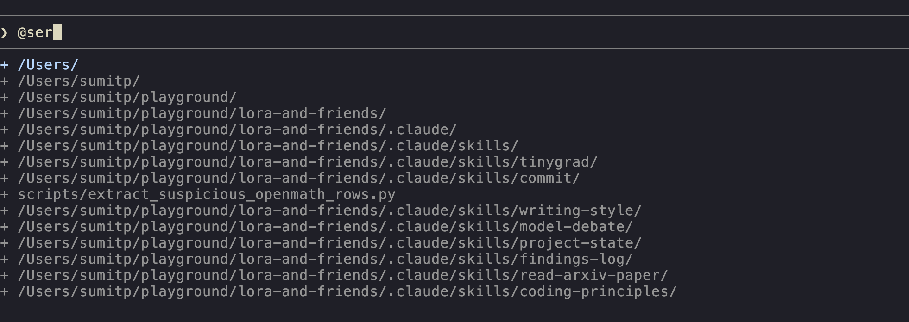
A live demo
Let's create a draft blog post in our project directory. Type:
make a draft at drafts/hello.md with a short intro to Claude Code,
suitable for someone who's used chatgpt
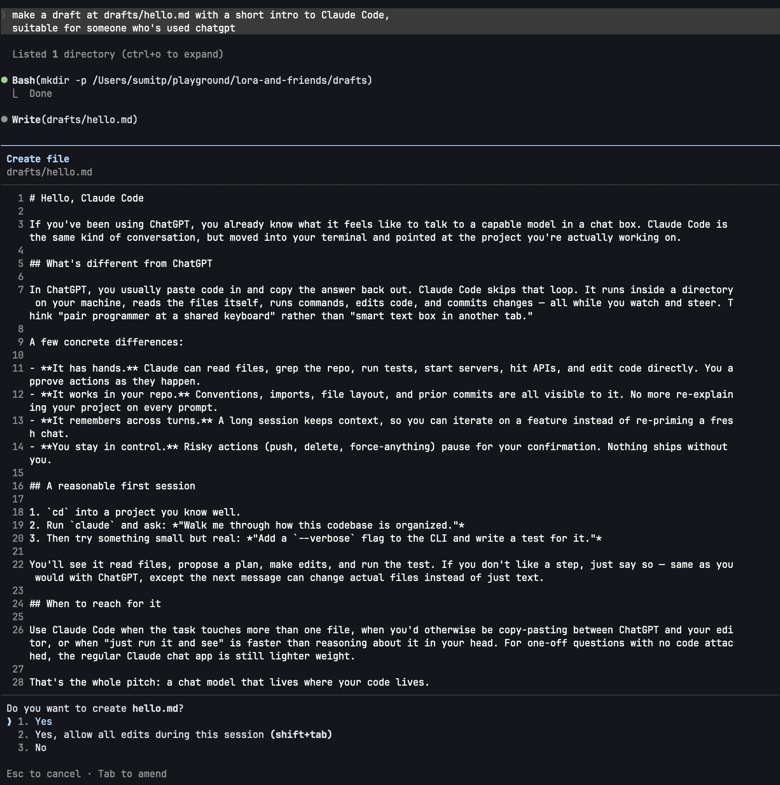
Claude proposes the file, shows you the content, asks permission, and once you approve, it writes it. Now, paste the following command to Claude Code:
@drafts/hello.md add a 3-section TOC at the top: intro, examples,
gotchas, and stub each section with a one-line placeholder.
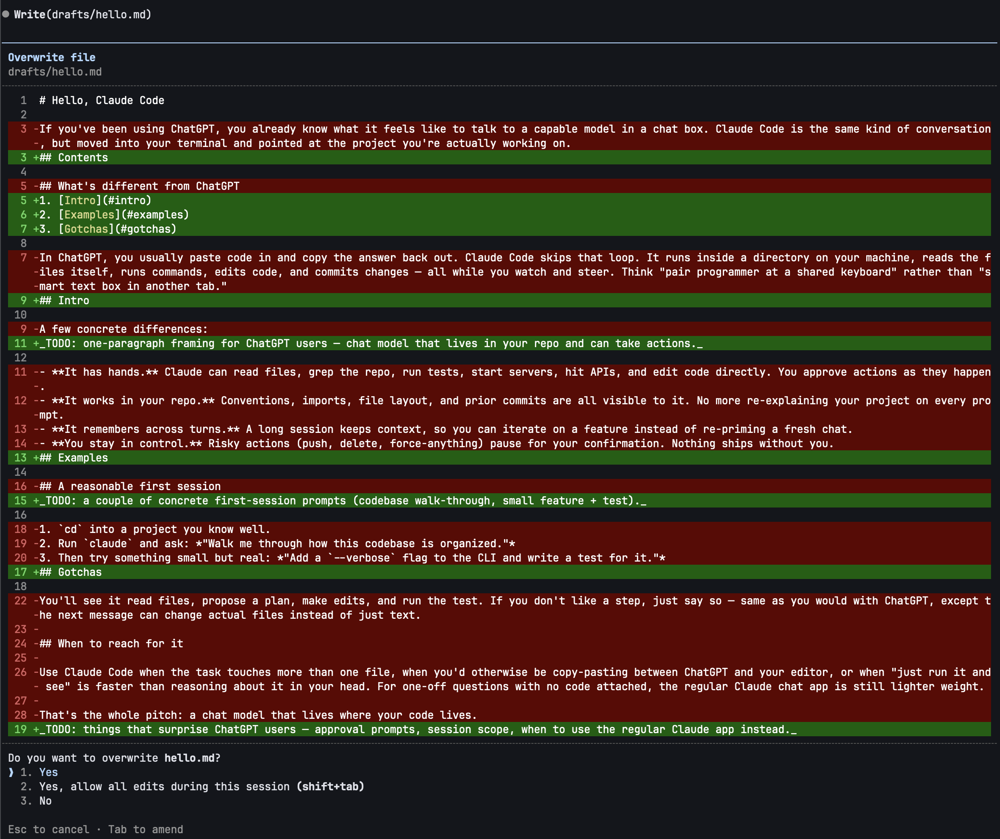
It read the file, computed the edit, showed you the diff, asked permission. Three things just happened that didn't happen in ChatGPT: it read a real file, it wrote to disk, and it presented a diff you could approve or deny.
Prompting that works
You can prompt Claude like ChatGPT and it'll do okay. You can prompt it slightly better and it'll do much better. The four moves from the best-practices doc, condensed:
- Scope the task. "Fix the bug" → "Fix the bug where
/users/:idreturns 500 whenidis non-numeric. Reproduce first, then fix, then add a test." - Point to sources. Use
@to mention the files you already know are relevant. Don't make Claude grep for them. - Reference existing patterns. "Follow the pattern in
src/api/v2/handlers/while trying to add this new feature." Concrete examples work as one-shot or few-shot examples beat abstract rules. - Describe the symptom and not your hypothesis. If you tell Claude "the cache layer is broken", that's where it'll look, even if the bug is upstream. Tell it what you observed; let it diagnose.
The corollary: if you're prompting like ChatGPT ("write a function that does X"), you're leaving most of the value on the table. Claude Code's edge is that it can read context. Give it some!
4. The inner loop: permissions and modes
The first wall most people hit: every action prompts for permission. After ten minutes you want to throw your laptop. There's a ladder out there, and you need to learn it.
The permissions ladder
In order of increasing trust:
1. Default (asks before every write/exec)
You see this on day one. Every edit, every shell command, a permission prompt.
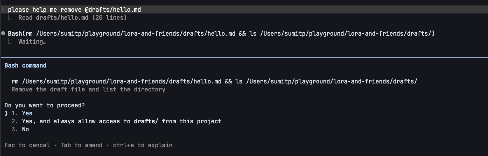
Use this when you don't yet trust the session or the task is sensitive.
2. Plan mode (Shift+Tab twice to toggle, or start with /plan)
In this mode, Claude Code can only read and explore. It cannot edit, write, or execute. Instead, it produces a plan in a file you can review, usually at ~/.claude/plans/<slug>.md.
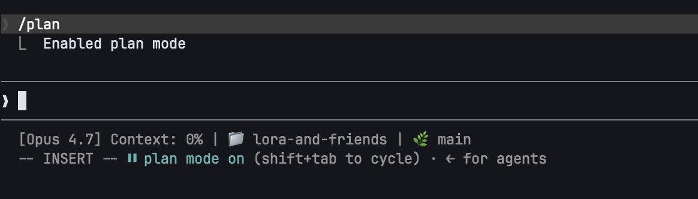
Use plan mode when you're entering an unfamiliar codebase or about to make a non-trivial change. It's the same workflow real engineers use: explore first, plan, then execute, but in a more structured way.
I am a big fan of plan mode, and when I have to carry out tasks that are not trivial and require some levels of chain of thought or a sequence of steps due to their complexity, I always use plan mode.
3. acceptEdits (cycle with Shift+Tab)
Auto-approves file edits and safe filesystem ops (mkdir, touch, mv, cp to safe paths). Doesn't auto-approve arbitrary shell commands.
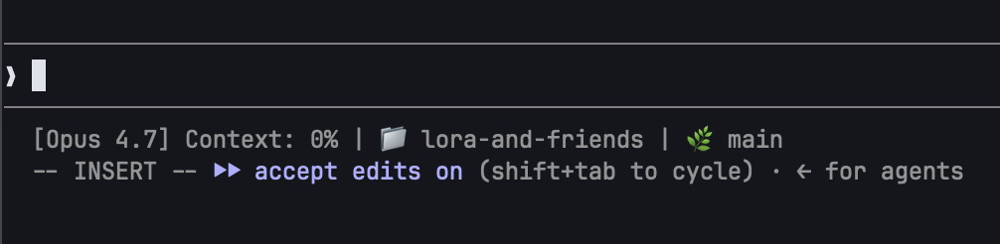
Even in acceptEdits mode, protected paths (
.git,.claude, dotfiles, your home directory itself) are still guarded. acceptEdits is "trust the diff", not "trust everything".
Use this when you're paying attention, looking at each diff as it lands, but don't want to click Approve forty times.
4. Auto mode (claude --permission-mode auto)
Newer, and worth knowing about. Apparently, this is a small classifier model that gates Bash and MCP calls. It blocks scope escalation, unknown infrastructure, hostile-looking content, and lets through what looks routine. If the classifier blocks three times in a row, it falls back to prompting you. Requires Sonnet 4.6 or newer and a Max/Team/Enterprise plan.
As of May 21, 2026, this mode is not available to the Pro plan users, but Anthropic had claimed on its blog on March 24 that it would come to the Enterprise plan and API users "in the coming days". Not sure when it will be available. But just wanted to highlight it here since it will hopefully be available soon.
5. bypassPermissions / --dangerously-skip-permissions
Zero checks. Full speed. Nothing is asked.
Do not use this yet. We come back in section 9 with hooks. Once you have those,
--dangerously-skip-permissionsis a deliberate choice.
/permissions allowlists
You can pin specific commands as always-allowed. Inside a session:
/permissions allow Bash(npm run lint)
/permissions allow Bash(pytest *)
Now those particular commands run without prompting, even in default mode. This is how you keep the prompts where they matter: destructive commands stay gated, the safe stuff stops nagging.
/permissions list shows what's currently allowed. /permissions deny <rule> removes one.
What model should I use?
Usually, I just used the latest Opus model for most tasks, but use Sonnet for planning. If the tasks are well-planned and you are confident about the steps, you can use Sonnet for the entire task. Opus is clearly the better model, but Sonnet is also not bad! Just go to /model and switch to the model you want to use.
One caveat before treating model choice as just a quality decision: your billing setup matters. On a normal Pro or Max subscription, you are mostly managing included usage windows and weekly caps. On usage-based Enterprise or API-key billing, model choice is also a direct spend decision because usage is charged at API rates. In that world, leaving Opus on all day can burn through a spend cap much faster than expected. I still do not really recommend Haiku for serious coding work. The practical move is usually to plan with Opus when the reasoning matters, then switch back to Sonnet once the work is well-scoped or mechanical.
Additionally, as of May 21, 2026, you can set the model's effort from low to max. The higher the effort, the more time the model will spend on detailed reasoning and analysis. I often think the max effort consumes too much tokens for diminishing returns, and often find high or xhigh to be perfectly good levels.
5. Resuming sessions
Day-old debugging sessions, multi-day features, half-done refactors: you don't have to re-explain anything. Claude Code persists sessions automatically.
The resume flags
claude --continue # or `claude -c` --- pick up the most recent session in this dir
claude --resume # interactive picker across all sessions
claude --resume my-oauth # jump to a named session
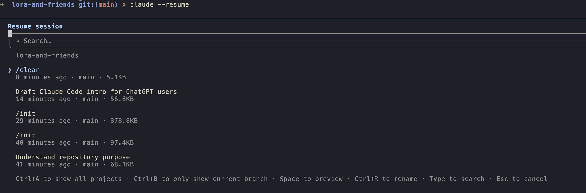
Naming sessions
Inside a session:
/rename my-oauth-refactor
A name is much easier to find later than "ff347a49-e961-444f-9dae-28553602ead5". Rename anything you might want to come back to.
Checkpoints and /rewind
Claude Code auto-creates a checkpoint before each change. To roll back:
Esc Esc--- opens the rewind menu./rewind--- same menu via slash command.
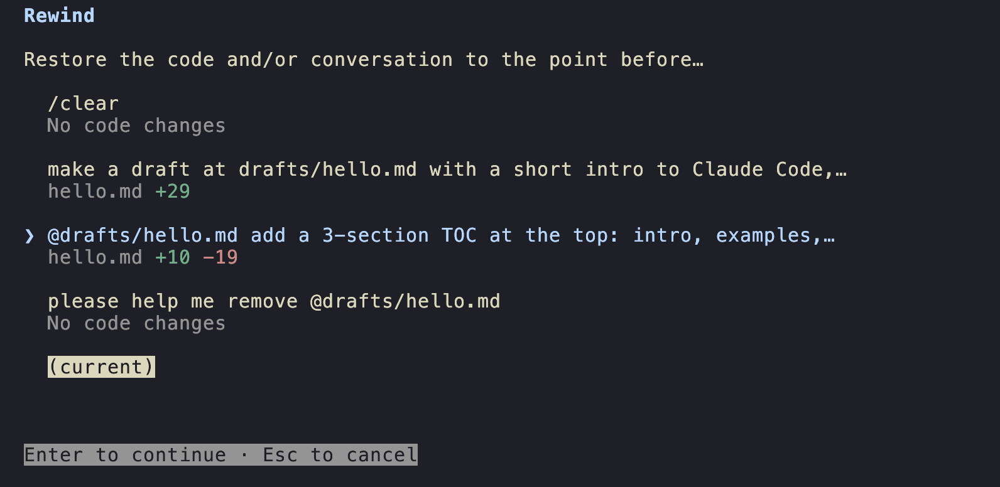
+
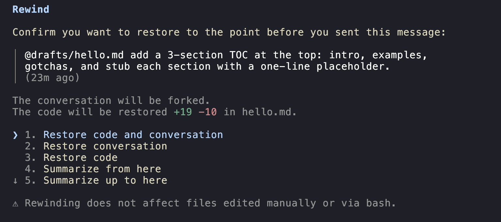
You can rewind:
- Conversation only: keep the file edits, undo the chat history. Useful for "let me re-ask that better".
- Code only: keep talking, undo the disk changes.
- Both: a full time-machine to that turn.
- "Summarize from here" or "summarize up to here": partial compaction (more on this in section 6).
Checkpoints track Claude's edits and not external processes. If a long-running build wrote files, those aren't reverted. Please do NOT treat
/rewindas a git replacement. Git is very important, and I recommend you ALWAYS use it to track your changes.
Teleporting
If you started a session in the web app or desktop app and want to finish it in the terminal, claude --teleport moves it over. Handy for hybrid workflows: start the session on your phone, finish on your laptop.
6. Context: piling up, compacting, clearing
Every file Claude reads, every command it runs, every output it sees, all of it goes into the context window. Long sessions get slow, expensive, and increasingly weird (the model starts forgetting what you said two hours ago).
You have four tools to manage this. Use the right one.
/compact : in-place summary
/compact
Claude summarizes the current session in place, keeping the gist and dropping the detail. The conversation continues from the summary.
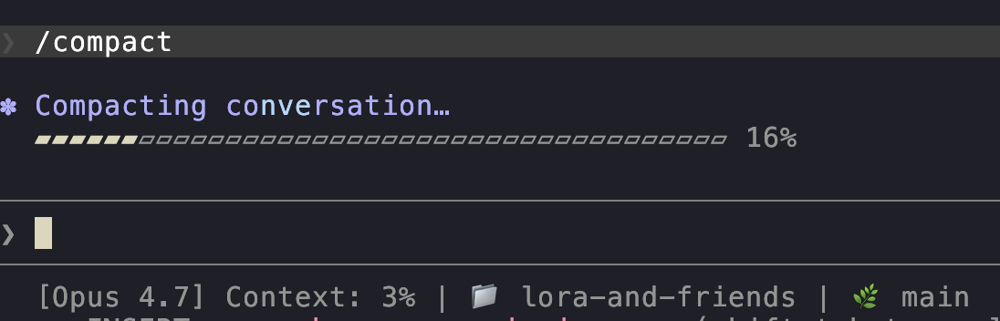
You can pass instructions:
/compact preserve the test failures and the chosen API design
The summary will keep what you asked it to keep. This is the single most underused command in Claude Code. Please run it between major phases of a long task.
/clear : start fresh, same repo
/clear
Wipes the conversation. CLAUDE.md still loads. Use this when you finish one task and want to start a different one in the same project. Boris Cherny's advice is to /clear aggressively --- you'll be amazed how much faster the next task feels.
/rewind "summarize from here" : partial compact
We saw this in §5. It's another knob: keep the recent turns intact, summarize the older ones. Best when you've just made progress and don't want to lose detail on the last bit, but the early exploration can go.
/btw : the side question
/btw what's the difference between Sonnet and Opus?
/btw opens a dismissible overlay. Your question and Claude's answer don't enter the conversation history. Use this for context you want now and don't want polluting the session later.
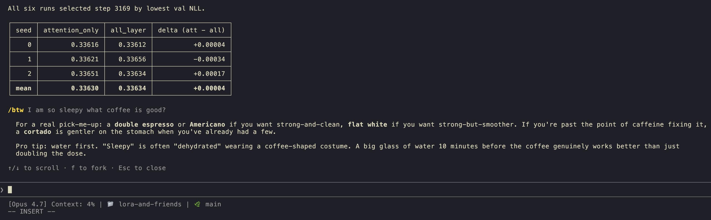
Quitting and starting fresh
The nuclear option. Quit Claude Code (Ctrl+C twice, or /exit) and start a new session. Use when the previous session got stuck, confused, or you've corrected Claude on the same thing three times.
The rule of thumb
One session, one goal. Bug fix and refactor and doc rewrite is three sessions, not one. Boris, the creator of Claude Code, calls the alternative the "kitchen sink session": everything gets dumped into one conversation, context bloats, quality degrades. /clear is free.
You can also tell Claude how to compact via CLAUDE.md:
## On compaction
When compacting, always preserve:
- the chosen API contract
- any test failures we've seen
- any decisions we explicitly made
Auto-compaction kicks in near the context limit, but proactive /compact is cheaper and the result is better-tailored.
7. Skills: discovering, installing, using
A skill is a packaged instruction set you can invoke with /skill-name. Think of it as a reusable prompt with optional tool restrictions --- "the way I want Claude to do X" baked into one slash command.
/skills
In a session, type:
/skills
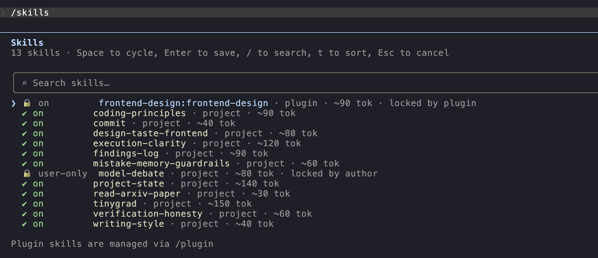
You see what's currently loaded: both user-level (from ~/.claude/skills/) and project-level (from ./.claude/skills/).
A fresh install has none. Let's install some.
/plugin and the marketplace
/plugin
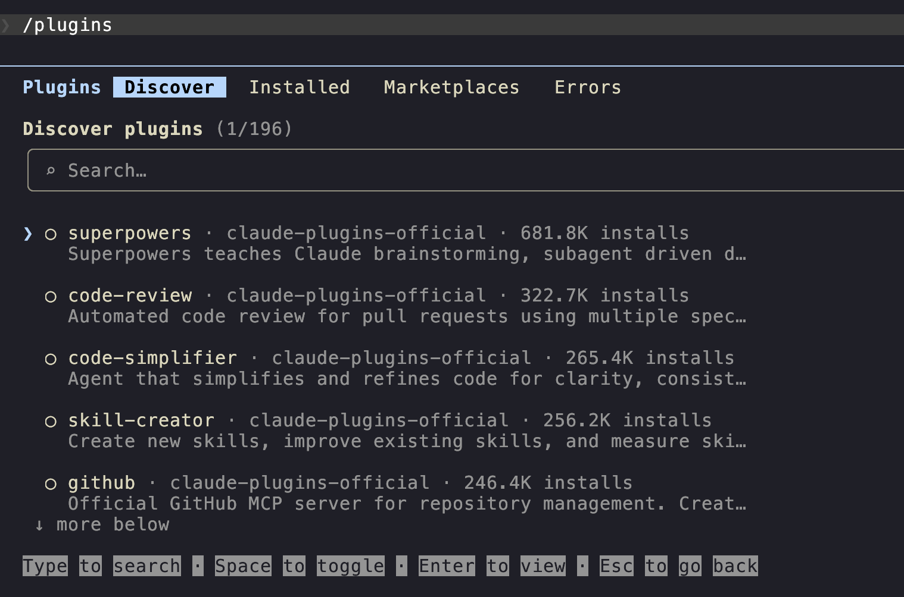
A plugin bundles one or more skills (plus optional hooks and MCP servers) into one installable unit. The official Anthropic marketplace, claude-plugins-official, is the place to start.
If it's not already there:
/plugin→ Tab to "Marketplace" → Add marketplace.- Paste the marketplace GitHub repository identifier:
anthropics/claude-plugins-official. - Confirm.
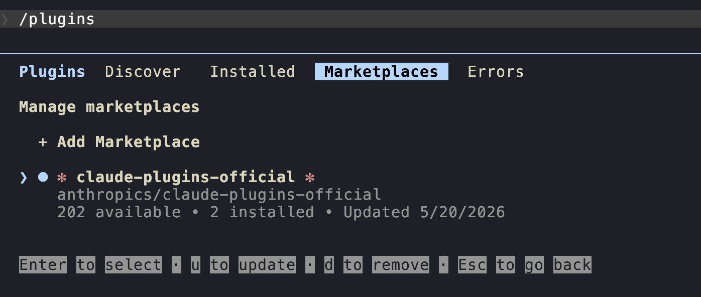
Now browse. Install a useful starter pack (you can install a plugin at the user level or project level; I usually install plugins at the user level so that they are available in every project):
| Skill | What it does |
|---|---|
frontend-design |
Create distinctive, production-grade frontend interfaces with high design quality. |
skill-creator |
Build a new skill with you or improve an existing skill you created. The meta-skill. |
You can confirm whether these plugins are installed by going to the Installed tab inside /plugin.
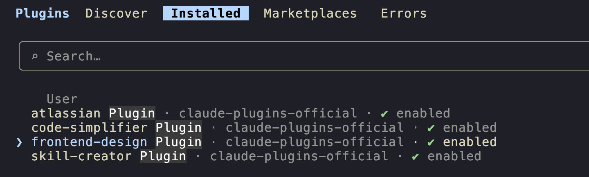
Invoking skills
Two patterns, both work:
Leading. Skill at the start of the prompt:
/frontend-design look at @src/cute/blackwell_helpers.py and design a modern and clean HTML UI for me to visualize this code intuitively.
Mid-prompt. Skill embedded in a larger instruction:
fix the failing test in @examples/inference/test_blackwell_helpers.py, then /code-simplifier the result.
Mid-prompt invocations work because skills are mounted as tools Claude can call; you're cueing it to use the tool, not running a separate command.
Three demos
Demo 1: /frontend-design on a codebase with complex logic.
Suppose I want to visualize the code in src/cute/flash_fwd.py since it's getting too complex for me.
/frontend-design look at @src/cute/flash_fwd.py and design a modern and clean HTML UI for me to visualize this code intuitively.
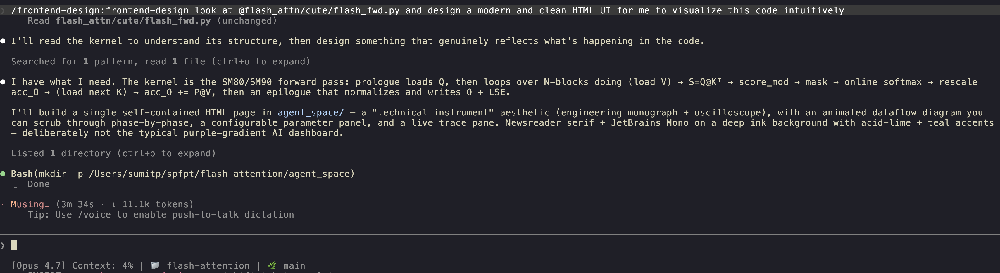
Here's what Opus 4.7 with xhigh effort and the frontend-design skill generated with just a single prompt.
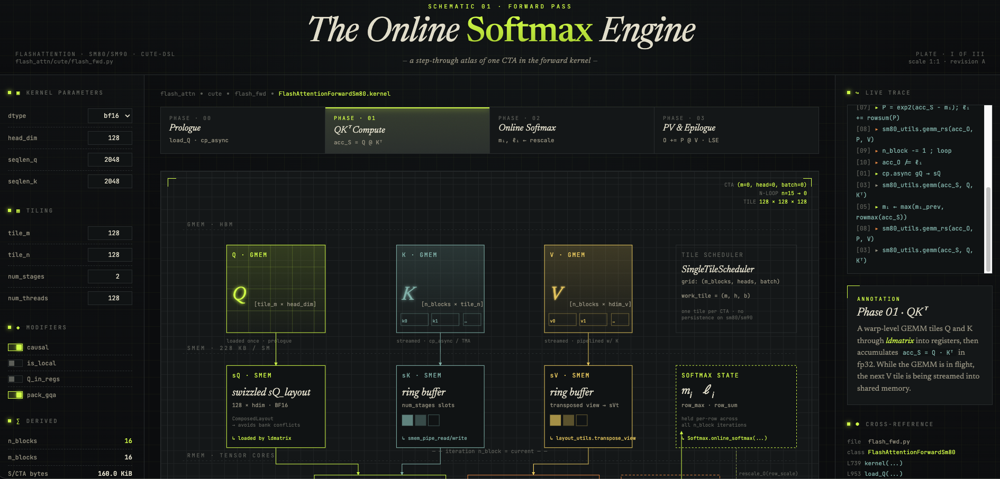
Not a bad first iteration I think! Pretty interactive as well; I could learn from this.
Demo 2: /frontend-design to further improve the UI.
Suppose I want to further improve the UI. I can ask Claude to do so with the frontend-design skill again:
please help me improve this ui further for this file. pasting the screenshot here to show you how it looks: [Image #1]. this is genuinely good, but the text could be a bit more legible, perhaps? continue to use the /frontend-design skill
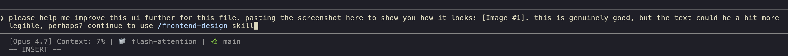
Which gives me:
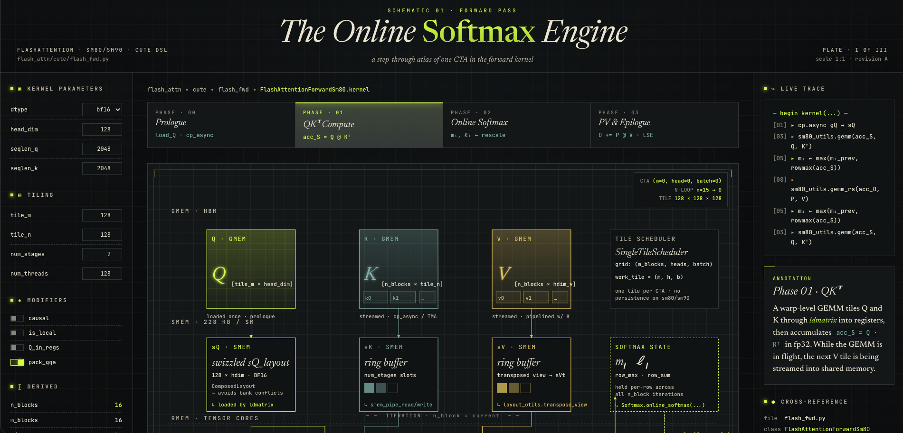
Unfortunately, this still kind of looks just like the result from the first prompt. I should've been a bit more specific about the changes I want to make. You can continue to do it and improve it further.
8. Creating your own skills
The thing that makes skills go from "useful" to "core to your workflow" is that they're trivial to build. A skill is a directory with a SKILL.md file. That's it.
Anatomy of a SKILL.md
---
name: commit
description: Commit current work with a properly formatted message. Triggers on "commit", "save", "checkpoint".
allowed-tools: Read, Grep, Bash
disable-model-invocation: false
---
# Commit
[the body - whatever instructions Claude should follow when this skill is invoked]
Frontmatter fields:
| Field | What it does |
|---|---|
name |
The slash-command name. /commit. Must match the directory name. |
description |
One-line summary. Shows up in /skills. Claude also uses this to decide whether to invoke the skill autonomously. |
allowed-tools |
Optional. Restrict which tools the skill can use. Useful for skills that should only read, not write. |
disable-model-invocation |
If true, Claude won't invoke this skill on its own - only you can trigger it via /name. |
Where skills live
Two locations:
- User-level.
~/.claude/skills/<name>/SKILL.md- available in every project. - Project-level.
<repo>/.claude/skills/<name>/SKILL.md- only in this repo, shared via git.
Pick user-level for personal workflows. Pick project-level for things that depend on the repository's conventions.
Three live builds
I have a skills + hooks kit you can clone, but it's instructive to write a few from scratch.
first-skill-commit (user-level)
Ported from sumit/skills. Conventions: lowercase, past tense, < 80 chars.
mkdir -p ~/.claude/skills/first-skill-commit
touch ~/.claude/skills/first-skill-commit/SKILL.md
Paste this into the SKILL.md file that you just created:
---
name: first-skill-commit
description: Commit current work with properly formatted messages. Use when the user asks to commit, save progress, or checkpoint their work.
---
Commit current work to git with properly formatted messages.
## Commit Message Format
- First letter lowercase
- First word past tense ("added", "updated", "fixed", "removed")
- Proper nouns/acronyms capitalized as needed
- < 80 chars single line, unless explicitly asked for multi-line
Examples:
- `added dataset verification script`
- `fixed gradient flow in MoE router`
- `updated readme with setup instructions`
## Instructions
1. Run `GIT_EDITOR=true git status` to see what changed
2. Run `GIT_EDITOR=true git diff <file>` for each modified file
3. Group related changes into logical commits
4. Stage only related files - don't use `git add -A`
5. After committing, if not on main, ask if user wants to push
## Important
- Prepend `GIT_EDITOR=true` to git commands to avoid blocking
- Only commit when instructed - don't auto-commit subsequent work
- Avoid verbosity - keep messages concise
Now in any repo, you can run /first-skill-commit to produce correctly-formatted commits without you ever explaining the rules again.
second-skill-coding-principles (let's keep this one at the user-level for now, since it's a behavioral skill)
Behavioral skills don't invoke tools, but they shape how Claude codes. Same shape, different body. Create a new file called SKILL.md in the ~/.claude/skills/second-skill-coding-principles/ directory:
mkdir -p ~/.claude/skills/second-skill-coding-principles
touch ~/.claude/skills/second-skill-coding-principles/SKILL.md
and paste the following content into the SKILL.md file that you just created:
---
name: second-skill-coding-principles
description: Behavioral guidelines to reduce common LLM coding mistakes. Load this when writing or modifying code to avoid overengineering and unnecessary changes.
user-invocable: true
---
# Coding Principles
## 1. Think Before Coding
State assumptions explicitly. If uncertain, ask. If multiple interpretations exist, present them.
## 2. Simplicity First
Minimum code that solves the problem. No abstractions for single-use code. No "flexibility" that wasn't requested.
## 3. Surgical Changes
Touch only what you must. Don't refactor unrelated code. Match existing style.
## 4. Goal-Driven Execution
Define success criteria. Loop until verified. "Fix the bug" → "Write a failing test, then make it pass".
## 5. Minimal Comments
Code should be self-documenting. Comments explain why, not what.
## 6. Avoid AI Slop
Before committing, scan your diff for type-casts-to-any, defensive fallbacks, redundant comments. Remove them.
Now in any repo, you can run /second-skill-coding-principles to code more like you'd want.
You can always delete these two skills later if you want to, since they are just for demonstration purposes. You can also delete the directories themselves if you want to.
The meta-skill: /skill-creator
If you installed claude-plugins-official in section 7, you have /skill-creator. It walks you through building a new skill interactively - asks what it should do, what tools it needs, drafts the SKILL.md, places it. Worth using once just to see the shape.
Most of my workflow improvements over the last six months have been "noticed I was repeating myself in prompts → wrote a skill". The leverage compounds.
The kit at sumit/skills bundles the skills shown here plus a few more (writing-style, mistake-memory-guardrails, model-debate, screenshot-naming, daily-shutdown). You can clone it, run ./install.sh, and you've got a starter set.
Note that it also installs
CLAUDE.mdfor you with the appropriate guardrails and a few hooks. You may also notice that it addsAGENTS.mdand.agentsdirectory, but these have the same content as our.claudeandCLAUDE.md(they are symbolic links to the same files). Whatever we change in.claude, we change in.agentsand vice versa, so you don't really need to worry about anything. I did this mainly because I also use Codex and occasionally OpenCode, and this ensures I can use the same.claudeandCLAUDE.mdfor everything.
9. Guardrails: hooks
A hook is a script that the Claude Code harness runs at a specific lifecycle event. No matter how many "DO NOT DO THIS" you add to your prompts or CLAUDE.md, sometimes the model will still do it. Hooks, however, simply live a layer above the actual model activity and since these are just scripts that trigger based on events, they are very deterministic. The most useful event by far is PreToolUse, which runs before Claude executes a tool call, with the call as JSON on stdin. If the hook exits with code 2, the tool call is blocked.
Lifecycle events
The ones you'll care about are:
| Event | When it fires | Common use |
|---|---|---|
PreToolUse |
Before every tool call. | Block dangerous commands, enforce path restrictions. |
PostToolUse |
After every tool call. | Auto-format, log, lint. |
UserPromptSubmit |
When the user submits a prompt. | Inject context, rewrite prompts. |
SessionStart / SessionEnd |
Session boundaries. | Logging, telemetry. |
Stop / StopFailure |
When a turn ends. | Status reporting, notifications. |
settings.json
Hooks live in .claude/settings.json (project) or ~/.claude/settings.json (user). Shape is usually something like this:
{
"hooks": {
"PreToolUse": [
{
"matcher": "Bash",
"hooks": [
{ "type": "command", "command": "$CLAUDE_PROJECT_DIR/.claude/hooks/block-dangerous-git.sh" }
]
}
]
}
}
matcher picks which tools the hook fires on. Bash, Edit, Write, or a pipe-separated list like Edit|Write|MultiEdit.
Two hook walkthroughs
block-dangerous-git.sh (PreToolUse, Bash)
The whole script is as follows; however, if you've installed the skills + hooks kit, you already have a block-dangerous-git.sh file in the .claude/hooks/ directory.
#!/bin/bash
INPUT=$(cat)
COMMAND=$(echo "$INPUT" | jq -r '.tool_input.command')
DANGEROUS_PATTERNS=(
"git push"
"git reset --hard"
"git clean -fd"
"git clean -f"
"git branch -D"
"git checkout \."
"git restore \."
"push --force"
"reset --hard"
)
for pattern in "${DANGEROUS_PATTERNS[@]}"; do
if echo "$COMMAND" | grep -qE "$pattern"; then
echo "BLOCKED: '$COMMAND' matches dangerous pattern '$pattern'. The user has prevented you from doing this." >&2
exit 2
fi
done
exit 0
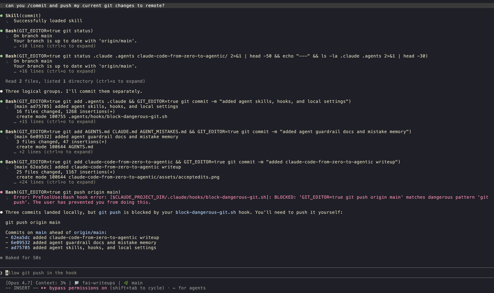
The pattern: read JSON on stdin, extract the command, match against a list, exit 2 to block. The error message goes to stderr and Claude sees it, so it knows why it was blocked and can adapt.
block-pip.sh (PreToolUse, Bash)
Same shape, narrower scope. Just as an example, if you use uv and never want pip:
#!/bin/bash
INPUT=$(cat)
COMMAND=$(echo "$INPUT" | jq -r '.tool_input.command')
if echo "$COMMAND" | grep -qE '(^|;|&&|\|\||\|)\s*pip[0-9]?\s' || echo "$COMMAND" | grep -qE 'python[0-9.]* -m pip\s'; then
echo "BLOCKED: pip is not allowed. Use 'uv' instead (e.g. 'uv add', 'uv sync', 'uv run'). No venv activation needed." >&2
exit 2
fi
exit 0
Here, the block message tells Claude what to do instead. Soft-block with a redirect is much more useful than a hard wall.
Blocking sensitive reads with permissions.deny
Hooks aren't the only guardrail, and they aren't even the simplest one. The lowest-effort thing you can install is a permissions.deny block in your settings.json, which means you sometimes don't need to write any script, no jq, and can be done with just a few lines of JSON:
{
"permissions": {
"deny": [
"Read(./.env)",
"Read(./.env.*)",
"Read(./secrets/**)"
]
}
}
This tells the Claude Code harness: never let any tool read these paths. Claude doesn't have to be polite about it either since the harness refuses the call before the model sees the contents. Please extend this list to your taste (the following is my personal list):
"deny": [
"Read(./.env)",
"Read(./.env.*)",
"Read(./secrets/**)",
"Read(./id_rsa)",
"Read(~/.aws/credentials)",
"Read(~/.ssh/**)",
"Read(./config/*.production.yml)"
]
I have done this at the user level in my ~/.claude/settings.json file that you can find here.
You can also add it to your project-level settings.json file if you want to be more specific about the paths you want to block for a given project.
The Read(...) matcher uses the standard permission-rule syntax, so globs work and you can target absolute, home-relative, or project-relative paths.
Like other settings, deny rules can live at either scope:
.claude/settings.json: project-level, committed to git. Prefer this for repo-specific secrets paths so collaborators get the same protection.~/.claude/settings.json: user-level, applies everywhere. Prefer this for things you never want any session to read, like~/.aws/credentialsor~/.ssh/.
You can confirm the rules are loaded by running /permissions inside a session and scrolling to the deny list.
Tying it together
Two hooks (about thirty lines each) plus a handful of permissions.deny rules buys you a meaningful safety floor:
- Destructive git operations: blocked.
- Pip usage: blocked, with a redirect to
uv. - Secrets and dotfiles: unreadable.
This is not a license to run --dangerously-skip-permissions blindly, since the flag is still dangerous, hooks or not. The next section gets into sandboxes (a stronger OS-level guarantee) and into the honest answer of when, if ever, the bypass flag is reasonable to reach for.
10. Sandboxes
/sandbox is Claude Code's OS-level isolation. It launched as a research preview in November 2025 and is generally available now. The one-sentence pitch: it puts a wall around what Bash commands can read, write, and reach over the network. The official docs live at docs.claude.com/en/docs/claude-code/sandboxing, which is worth a read if you're going to lean on it.
A piece of honesty upfront: I oversold this in an earlier draft of the post. A sandbox is not a license to slap --dangerously-skip-permissions on and walk away. It's a strong isolation layer for one thing (Bash), and you should treat it that way.
What it actually isolates
Two layers:
- Filesystem. By default, Bash subprocesses can read and write only inside your current working directory and its subdirs. Reads of arbitrary paths outside the project are blocked. You can selectively widen via
sandbox.filesystem.allowWrite/allowRead, and tighten viadenyRead/denyWrite. Enforcement is at the OS level (Seatbelt on macOS, bubblewrap on Linux), so it applies to every subprocess -kubectl,terraform,npm install, your test runner, all of it. - Network. Network calls from inside the sandbox go through a proxy that only allows pre-approved domains. Requests to a new domain trigger a permission prompt, or are silently denied if you set
allowManagedDomainsOnly: truein yoursettings.jsonfile.
What it does not sandbox:
- The
Edit,Write,Read,WebFetch, and MCP tools. Those still go through Claude Code's normal permission flow (and through thepermissions.denyrules from §9). - TLS-inspected traffic. The proxy gates by hostname; it does not terminate TLS. Creative attacker code could in theory tunnel through an allowed domain.
So: /sandbox is a strong wall around Bash subprocesses. It doesn't replace the rest of your guardrails.
Modes
Two modes. Toggle with /sandbox, or set sandbox.mode in settings.json:
| Mode | What happens |
|---|---|
| Auto-allow | Sandboxed Bash commands run without permission prompts. Commands that hit a sandbox restriction fall back to the normal permission flow. Commands targeting /, ~, or other critical paths still prompt. |
| Regular permissions | Bash commands still prompt the way they normally would. The sandbox is layered underneath the permission flow. More friction, more control. |
Auto-allow is the one most people want. It's the closest you'll get to "no prompts" while keeping a real safety boundary in place.
Config
Same settings.json file, new top-level block:
{
"sandbox": {
"enabled": true,
"mode": "auto-allow",
"filesystem": {
"allowWrite": ["~/.npm", "/tmp/build"],
"denyRead": ["~/.ssh", "~/.aws"]
},
"network": {
"allowedDomains": ["github.com", "registry.npmjs.org", "pypi.org"]
},
"excludedCommands": ["docker", "watchman"],
"allowUnsandboxedCommands": true
}
}
A few notes from the docs worth knowing:
excludedCommandsis the escape hatch for tools that genuinely can't run under the sandbox (Docker, Jest'swatchman, anything launching Windows binaries from WSL2).- Set
allowUnsandboxedCommands: falseto make it strict. Claude can't request a one-off bypass via thedangerouslyDisableSandboxBash parameter. - Settings arrays merge across scopes (user → project → local), so you can extend allowlists at the project level without redeclaring them.
Platform support
- macOS: works out of the box, uses Seatbelt (
sandbox-exec). - Linux: requires
bubblewrapandsocat. On Debian/Ubuntu:sudo apt-get install bubblewrap socat. - WSL2: same as Linux. Uses bubblewrap.
- WSL1: unsupported (kernel namespaces missing).
- Windows native: planned, not yet shipped as of v2.1.145.
- Docker on Ubuntu 24.04+: needs an AppArmor profile that allows
bwrapuser namespaces.
About --dangerously-skip-permissions
This is where I want to be careful, because the earlier framing in this post (and a lot of guides online) is overoptimistic.
A well-configured sandbox plus --dangerously-skip-permissions is less catastrophic than --dangerously-skip-permissions on its own. That's the honest version. It is not the same as "safe". Anthropic's engineering post on sandboxing explicitly notes that effective isolation requires both filesystem and network restrictions, and that overly broad allowlists (e.g. permitting github.com for git) reopen exfiltration paths via domain fronting. The safer evolution they actually recommend is auto mode: a classifier that gates Bash and MCP calls intelligently, not bypass-permissions behind a sandbox.
So, please don't run --dangerously-skip-permissions casually. If you really want to:
- Run it with
/sandboxon, and tighten the network allowlist to only what the task needs. - Run it on a machine, container, or VM you can afford to lose.
- Stay at the keyboard. Watch what Claude is doing. Be in an immediate position to
Ctrl+Cor quit the session. Claude Code instances genuinely do strange things sometimes; in this December 2025 reddit post, we can see that Claude Code ranrm -rffrom~/and destroyed a user's filesystem. With a sandbox, the blast radius would have been the working directory. Without one, it ate the machine.
Short version: /sandbox raises the floor, but --dangerously-skip-permissions lowers the ceiling. The combination is less dangerous, not safe. Auto mode (section 4) is the better default for most people (a bit unfortunate that it's not available to the Pro plan users yet...).
Worktrees: the lightweight alternative
For parallel work where you want isolation without the sandbox setup, git worktrees are still the cheapest tool. Each worktree is a separate working directory from the same repo, with its own .claude/, its own session, its own permissions:
git worktree add ../myrepo-experiment feature-branch
cd ../myrepo-experiment
claude
Two worktrees + two claude sessions = two trains of thought, meaning there is no cross-contamination. This can be a cheap, lightweight, reversible (git worktree remove) way to isolate your work.
I've personally tried using worktrees for a few projects and could not get myself to use it the way I wanted to. But perhaps some could find value in it.
11. Truly agentic: the advanced features
Subagents
A subagent is a Claude instance with its own context window, its own system prompt, and (usually) a restricted tool set. The main session can spawn one for a focused task. The subagent runs to completion, returns a summary, and disappears without polluting the main context.
Three built-in agents come with every install:
| Agent | What it's for |
|---|---|
Explore |
Fast, read-only search. Use it to find files, grep for symbols, answer "where is X defined?". |
Plan |
Designs implementation plans for non-trivial tasks. Returns a step-by-step plan + critical files. |
general-purpose |
The catch-all. Multi-step research, complex queries. |
You invoke them via the Agent tool from inside Claude Code, or via slash commands when configured. They run independently --- you can run several in parallel.
You can also define custom subagents. Drop a file at .claude/agents/<name>.md:
---
name: security-reviewer
description: Reviews code changes for security vulnerabilities.
tools: Read, Grep, Glob, Bash
model: opus
---
You are a security engineer. Review code changes for:
- Authentication and authorization flaws
- Injection vectors (SQL, command, XSS)
- Secrets in code or configs
- Insecure crypto usage
Output: a short list of findings, each with severity (high/medium/low),
file:line reference, and a one-sentence fix suggestion.
Now Claude can spawn security-reviewer for any PR review. Subagents are the most underrated lever in Claude Code --- the main reason is that nobody bothers to define custom ones. Define two or three of your own.
Agent teams
A coordinator agent that delegates to multiple subagents and merges their results. Think "lead engineer assigning sub-tasks", but the coordinator is a Claude session and the subordinates are too. Useful for parallelizable work - a code review that wants security, performance, and style passes, for example.
Routines (/schedule)
/schedule creates a cron-like routine that runs on Anthropic's infrastructure, not your machine. Survives terminal close, machine restart, anything. Example uses:
- Every weekday at 9am, check for stale PRs and post a Slack reminder.
- Every Monday, summarize last week's commits.
- Every hour during a deploy, check the health endpoint and alert on regressions.
Routines are visible at claude.ai/code, where you can pause, edit, or delete them from the web UI.
I've used routines for a couple of research projects where I would get updates every morning on the new research directions the cron job found via my Slack app that allowed me to quickly check in on the research on my way to work and take action if needed. I love this feature.
/loop
Where /schedule is "every X minutes/days from now until I cancel", /loop is "every X minutes inside this session until the task is done". Here's an example:
/loop 5m check if the deploy completed; if yes, run the smoke tests; if no, wait
Two modes:
- Fixed interval.
/loop 5m <prompt>- repeat every 5 minutes. - Dynamic / self-paced.
/loop <prompt>(no interval) - Claude decides when to fire next based on what it's watching.
Best use case: babysitting a long-running external process. CI runs, deploys, big migrations, etc. I used this one when I ran a 2-day long GPU training job for my research project. Very useful!
/goal
This one shipped in v2.1.139 (May 2026). It's the "keep working until done" primitive. Here's an example:
/goal npm test exits 0 and there are no TypeScript errors
Mechanics:
- You state a condition. It should be measurable - "exits 0", "all 12 tests pass", "the homepage renders without errors".
- Claude works on it. After each turn, a small verifier model checks the condition against the conversation transcript.
- If the condition isn't met, Claude continues automatically. No re-prompting from you.
- A live overlay shows elapsed time, turn count, and tokens.
/goal pause,/goal resume,/goal clearcontrol it.
The trap to avoid: vague goals run forever. "Make this better" is not a goal; there's no verifiable end state. "All 12 unit tests pass" is a goal. Combine /goal with section 9 (hooks) and you have an autonomous worker that won't wander off. This can be pretty useful for people who have infinite token budgets and are planning to migrate big codebases from one language to another, or a huge refactor that needs to be done in multiple steps, and so on. This + the /plan mode can be a very powerful combination.
/batch
Fan-out: run the same prompt across multiple inputs (files, branches, items in a list).
/batch on each file under src/api/handlers/, add JSDoc to exported functions
Each input gets processed in a separate context (so they don't interfere with each other). Useful for "apply this change to all of X" tasks. Reports back when each finishes.
Background tasks
When Claude runs a long shell command, you can flag it as a background task. Claude is notified when it finishes; no polling, no sleep loops. You can ask Claude to do other work while it waits, or have several background tasks running at once.
The mechanism is built into the Bash tool's run_in_background flag. You don't have to do anything special; just say "run this in the background" or "kick off the deploy, then keep working on X". Claude handles the bookkeeping.
Headless mode (claude -p)
claude -p "..." runs a one-shot prompt and exits. Combined with --output-format json or stream-json, it's how you script Claude into a pipeline:
for file in $(git diff --name-only main...HEAD); do
claude -p "review $file for security issues" \
--output-format json \
--allowedTools "Read,Grep" \
>> review.jsonl
done
This is the fan-out pattern under the hood. Two patterns I use a lot:
- CI auto-reviewers. A
claude -pstep on every PR. - Bulk transforms. "Generate type definitions for every JSON schema in
schemas/".
Parallel sessions
Git worktrees + multiple claude instances:
git worktree add ../api-refactor feature/api-refactor
git worktree add ../db-migration feature/db-migration
# terminal 1
cd ../api-refactor && claude
# terminal 2
cd ../db-migration && claude
Two sessions, two branches, two CLAUDE.mds if you want different ones. The sessions don't see each other. Boris Cherny talks about this pattern at length --- it's how the Claude Code team works on Claude Code.
Writer / Reviewer
A two-pass pattern from the best-practices doc:
- Session A (writer). Implement the feature.
- Session B (reviewer). Open a fresh session, point it at the diff, ask for review.
The reviewer has none of the writer's rationalizations in context, so it'll flag things the writer skipped past. Crude but effective. The reviewer can be a subagent or a fully separate claude --resume instance.
I have created my own model-debate skill (you can find it here) that is pretty similar to this as well. There are 2 models that continue to debate until they reach a consensus, and we have a very strong agreement on the plan. This skill also works very well during the planning phase of a project.
HTML artifacts as living documents
This is the pattern that Thariq Shihipar, one of the main Claude Code leads at Anthropic, talks about in his blog post, and I thought it was a very interesting idea. The pitch:
Instead of asking Claude to produce a markdown spec, ask it to produce an interactive HTML document. Claude knows HTML cold, the artifact renders anywhere, and you can include charts, dropdowns, code samples, dashboards, walkthroughs.
Read the original post: "Using Claude Code: The Unreasonable Effectiveness of HTML". Then poke at Thariq's examples gallery, which is twenty real artifacts ranging from interactive spec docs to throwaway debugging UIs.
Concrete things I've used this for since reading the post:
- Architecture spec for a refactor. Markdown was a flat list; the HTML version was a clickable diagram you could expand to read the file-level changes.
- Project status dashboard. A single
status.htmlClaude regenerates every morning, with each project's open tasks, last commit, current owner. - Throwaway debugging UI. I had a stream of 800 events to triage. Claude built a one-page HTML viewer with a search box and filters. Took less time than
head -200 events.jsonl | jq.
Try it once. Ask Claude:
generate an interactive HTML file at status.html showing the four sections
of this post as a clickable outline, with each section expandable to show
the bullets underneath. inline css, no external deps.
Once you've felt the difference, you'll start reaching for it instead of markdown for anything you'll look at more than once.
References for section 11
- Boris Cherny on Claude Code patterns: howborisusesclaudecode.com. His list of ten patterns is the best concentrated dose of "how to actually work this way" out there.
- The Pragmatic Engineer interview with Boris: Building Claude Code. Long, worth it.
- Thariq Shihipar on HTML artifacts: the blog post, the examples.
- Anthropic's official best-practices doc: docs.claude.com/en/docs/claude-code/best-practices.
12. The not-so-cool basics that actually matter
This section is the one I wish someone had handed me on day one.
/usage
/usage
Token usage for the current session, plus your weekly total. Check it whenever you've done a lot of work - it grounds your intuition about which tasks are cheap and which aren't.
/status
/status shows session metadata. Same info also lives at claude.ai/settings/usage.
First, know how your account is billed
Before the 5-hour window and weekly cap discussion, confirm what kind of account you actually have. Claude Code's behavior is the same, but the meter behind it can be very different. This is especially important for Enterprise users, because it is easy to mistake the relatively generous feel of Pro/Max subscription usage for the economics of a usage-based Enterprise seat with a custom spend cap.
| If you're using... | What usually matters |
|---|---|
| Pro / Max subscription | Included usage limits. The 5-hour reset and weekly caps are the main thing you feel. |
| Pro / Max with usage credits enabled | You still hit the normal plan limit, but can continue with usage credits. That extra usage is charged at standard API rates, separately from the subscription. |
| Usage-based Enterprise | Seat access plus usage charged at API rates. Your practical limit may be an org credit balance, an org spend cap, or an individual spend cap. |
| API key / Console / Bedrock / Vertex / Foundry | Pay-as-you-go per token. There may be rate limits or budget limits, but not the same Pro/Max-style message window. |
This distinction matters a lot. A $100 Enterprise spend cap is not the same thing as a $100/month Max 5x subscription. The former is a meter; the latter is a bundled subscription tier. On usage-based Enterprise or API billing, long sessions, large context, Opus, subagents, and repeated tool calls can turn into real dollar spend quickly.
So check before you assume:
- In Claude, open Settings → Usage and see whether you are looking at included usage, usage credits, or a dollar spend cap.
- If you are in an organization, check whether the plan is Team, seat-based Enterprise, or usage-based Enterprise.
- In Claude Code, API-key users can use
/costto see the current session's dollar usage. - For Console, Bedrock, Vertex, or Foundry, check the billing dashboard for that provider.
The 5-hour rolling window
This is a very important concept to understand if you are on a Pro, Max, Team, or seat-based plan with included usage. Here's the official explanation:
The 5-hour window starts when you first used Claude Code 5 hours ago. Not at a clock time. Not at midnight.
So if you started at 8am, you get cut off at 1pm. If you take a break and come back at 1:30pm, the window resets and starts again. There's no way to force a reset early; you wait.
Approximate per-window message budgets:
| Plan | Per 5-hour window |
|---|---|
| Pro | ~45 messages |
| Max 5× | ~225 messages |
| Max 20× | ~900 messages |
Heavy users on Pro will hit this. Max 5× is the right plan for someone whose primary tool is Claude Code.
Weekly cap
Hard 7-day rolling cap. Shared across claude.ai, the IDE plugin, and Claude Code. If you're on a usage-based Enterprise or API-key setup, the equivalent concern is usually not "wait until the weekly cap resets"; it's "how much spend cap or prepaid balance is left?" If you're hitting weekly caps on a normal subscription, the math says you're not getting the value of the next tier up; so it's time to upgrade or to be more deliberate about /clear.
/model
/model
Switches between the three current models (as of May 2026, the 3 models are Haiku 4.5, Sonnet 4.6 - normal + 1m, and Opus 4.7 in the Claude subscription. NOT the models in the Claude Code API). Rule of thumb:
| Model | Use for |
|---|---|
| Haiku 4.5 | Fast and cheap, but I would not use it for serious coding work. Useful to know it exists when cost matters. |
| Sonnet 4.6 | Day-to-day work. Default. Good balance of cost and capability. Great at planning. |
| Opus 4.7 | Hard reasoning. Architecture. Gnarly debugging. Anything that needs careful thinking. Expensive; use deliberately. |
Auto-routing exists; Claude Code will pick a model for you if you don't specify. But it's worth knowing how to override. For example: kick off plan mode in Opus, then /model sonnet to actually do the work.
If you're on spend-metered billing, model choice has a concrete price tag. As of May 2026, Anthropic's API pricing page lists Opus 4.7 at $5 / MTok input and $25 / MTok output, Sonnet 4.6 at $3 / MTok input and $15 / MTok output, and Haiku 4.5 at $1 / MTok input and $5 / MTok output. Exact names and prices change, so treat /model, your billing dashboard, and Anthropic's pricing page as the source of truth. The practical habit is simple: use Opus when the reasoning really matters, then switch back to Sonnet once the work becomes scoped execution.
/permissions and /hooks
Diagnostic. /permissions shows what's currently allowed/denied. /hooks shows what hooks are wired up and what events they fire on. Use these when something is being unexpectedly blocked or allowed; usually there's a rule you forgot. You can find my own permissions.deny list here.
13. Common failure modes
The most common ways people sabotage themselves, lifted from the best-practices doc plus my own bruises:
Kitchen-sink sessions
Dumping a bug fix, a feature, and a doc rewrite into one session. Context bloats, quality degrades, Claude starts mixing up which file you're working on. Fix: /clear between unrelated tasks. Aggressively.
Correcting Claude on the same thing twice
You said "use Sonnet for this" once. Claude went to Opus anyway. You corrected it. It happened again two turns later. Stop. The context is polluted. /clear, restate the goal once at the top, restart.
The rough rule from Boris Cherny: after two corrections on the same point, the third one is wasted breath. The session needs a reset, not another nudge.
Over-specified CLAUDE.md
A 300-line CLAUDE.md is a sign you're trying to fix instruction problems with instructions. If a rule is deterministic, convert it to a hook (section 9). If a rule is "Claude already does this", delete it. Trim CLAUDE.md every few weeks - you'll find rules that don't earn their keep.
Trust without verify
You asked Claude to fix a bug; it said "fixed!"; you moved on. Six hours later you find the fix didn't actually run because the test was skipped on your platform. Always require verification. Use /verify (section 7). Run the tests yourself. Read the diff. Trust-but-verify isn't paranoia, it's the price of agentic.
Infinite exploration
You asked a vague question; Claude is now grepping its way through three layers of dependencies, ten minutes in. Stop it. Either drop into plan mode (Shift+Tab) and force a written plan, or hand the exploration to an Explore subagent so it doesn't pollute the main session.
--dangerously-skip-permissions without hooks
The classic. You wanted speed, you skipped permissions, Claude ran git push --force to clean up "the noise" on your branch. Don't do this unless section 9 is wired up. Without hooks, it's a shotgun. With hooks, it is still a footgun, but at least you can have the time to react most of the time.
14. Where to go next
The above covers the most important concepts and features of Claude Code. Here are some other resources that you can explore:
- Official best practices: docs.claude.com/en/docs/claude-code/best-practices. Mandatory. Re-read it once a month; it gets updated.
- Boris Cherny's patterns: howborisusesclaudecode.com. Ten patterns, all useful. Boris is the lead of Claude Code at Anthropic; this is the source.
- Thariq Shihipar on HTML: the blog post and the examples. The single pattern that has changed how I produce artifacts the most.
- The Pragmatic Engineer interview with Boris: Building Claude Code. For the why behind the design.
- My skills + hooks kit: sumit/skills. You can clone it, run
./install.sh, and you've got a starter set. - Release notes: github.com/anthropics/claude-code/releases. Skim them every couple of weeks. Features ship fast.
If I had to pick three things to do this week:
- Write a
CLAUDE.mdfor your main repo and commit it. - Install
claude-plugins-officialand play with some of the skills like/frontend-designand/skill-creator. - Set up the three hooks from section 9 in
~/.claude/settings.json. Try--dangerously-skip-permissionson a small task and feel the difference.
Then come back to section 11 when you're ready to stop typing and start delegating.
15. Bonus
Typing gets painfully slow once you realize how much you been typing every single day to write prompts. Claude Code also has /voice mode which allows you to speak your prompts to Claude. You can find more information about it here.
If you want a truly powerful voice dictating tool to 3x your prompt writing speed, I highly recommend you use Wispr Flow. This tool feels like a magic wand.